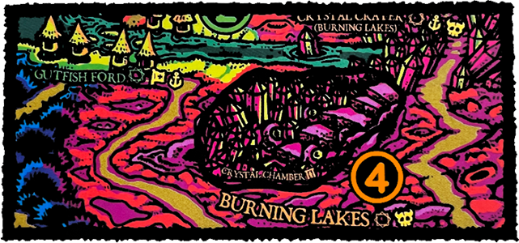

MAKE A SCRATCH
The twitchy, gaunt man in a dark & heavily stained overcoat dabs his forehead with a handkerchief as he nervously asks you to undertake a dangerous mission on his behalf. He needs some brave souls to gather together rare ingredients required to finish a formula he is working on. The concoction requires the dried remains of a horrifying Skinwalker & a small amount of a fine crystalline powder found only where the threshold between worlds is thinnest.
SETUP
Place the Crystal Chamber map overlay as shown below. This represents an additional Location in the Burning Lakes. The Crystal Chamber is adjacent to Crystal Crater & shares the Danger Level of the Burning Lakes. You can only move to the Crystal Chamber if the Crystal Crater is Explored ġ.

Ġ5 Crystal Chamber (Void Powder can be found here)
Ġ6 The Maze (Void Powder can be found here)
Further Clue Ġ counters are placed facedown to represent accursed sites where the grotesque Skinwalkers congregate.
| Ġ The Black Tree | Ġ The Blasted Heath |
| Ġ The Graveyard | Ġ Last Chance |
ĝ Skinwalker (Lowlands Monster)
ĝ Void Powder (Epic Loot)
OBJECTIVE
When you destroy a Skinwalker, keep its card as an Item to represent its disgusting remains carried in a sack. If you bring this along with Void Powder to the Crossroads & Rest there, you may meet the apothecary & give him the ingredients to complete your mission by discarding the Skinwalker & Void Powder.
COLLECTING INGREDIENTS
It is theorized by wizards & scholars that Skinwalkers congregate around enchanted & haunted places. These blood-drinking husks drift across barren landscapes guided by the imperceptible flow of void energies coursing between ancient ruined & mystical sites scattered across the Borderlands.
Some say the Skinwalkers are the shed skin of a 'scratcher' - a user in the later stages of addiction, returned with a will of its own to prey on human blood. Most consider this to be merely an old wives' tale invented to scare the children of the Würstreich away from 'scratch' - an inexpensive & highly addictive stimulant sold on the streets & down the back alleys of Brüttelburg.
Void Powder is altogether more rare - an otherwordly substance sought after by all manner of wizards, alchemists, mystics & merchants. Your mysterious employer suggests it is a residue that can be collected from certain crystal formations that grow in caverns below the toxic bubbling Burning Lakes.
When you successfully Explore ġ in a space with a facedown Clue Ġ counter, flip that counter & compare its value to your highest single die. If your highest die is equal to or greater than the counter's value, remove that counter & take the Skinwalker from the Mission ĝ deck & you must fight it this turn in addition to monsters indicated by your Danger card (if any).
If your highest die is lower than the counter's value, remove that Clue Ġ counter from the board, but you do not find a Skinwalker.
If you successfully Explore ġ in a space with a faceup Clue Ġ counter (Crystal Chamber or the Maze), you may take Void Powder from the Mission ĝ deck.

REWARD
Each adventurer gains 1 Luck Ğ & the apothecary pays the party 2D6+4 GPĎ. If there are any Merchants in the party, the Merchant with the lowest MRL may take the Scratch Dealer Triumph card.
MISSION PATH
The sweaty apothecary flashes a sinister smile & rewards you by revealing his true agenda. You've been an unwitting pawn in a plot to destabilize the Würstreich from within. Having collected enough Void Powder to create a massive supply of Scratch, the drug will soon flood Brüttelburg & drown it in an unstoppable scratcher epidemic!
You've made it clear you're willing to get your hands dirty & risk your neck for coin, but will you join the ranks of the infamous Necro Coven & become a sworn enemy of the rotten Empire? If you accept the challenge of initiation, you must bring İDeath for Hire. If you refuse, the apothecary warns you that the Necro Coven will surely come for your head. Your only hope is to round them up & burn them on Witch Hill before they have you killed! You have no choice but to İHunt the Witch Cult.
[Missions III] If you want to take a step further into the Alchemy game, you can test your hand out as a İCrystal Logic.